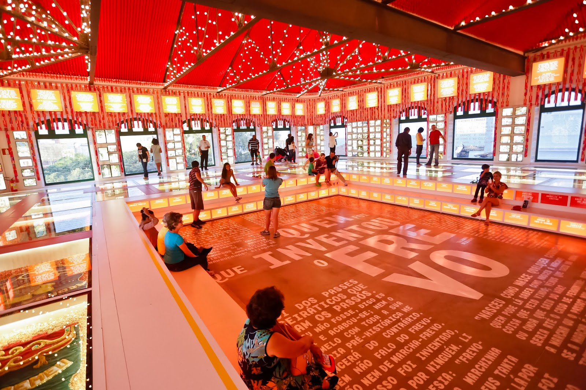
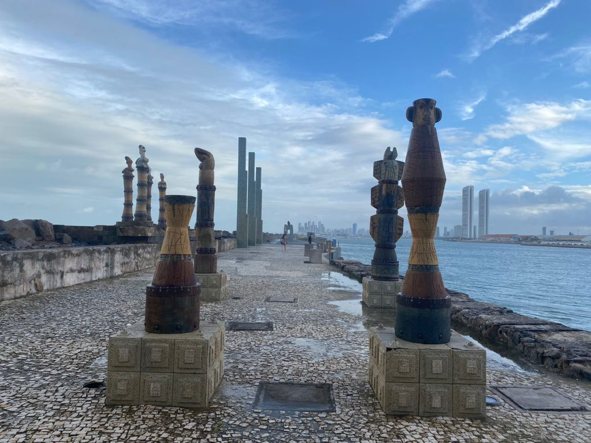

Paço do Frevo
O Paço do Frevo é um espaço cultural que celebra o Frevo, uma das expressões mais marcantes da cultura pernambucana. Localizado no coração do Recife Antigo, o Paço do Frevo oferece exposições, cursos, oficinas e apresentações artísticas relacionadas ao Frevo.
Parque das Esculturas de Francisco Brennand
O Parque das Esculturas de Francisco Brennand é uma área ao ar livre que abriga obras monumentais do famoso artista pernambucano Francisco Brennand. Localizado às margens do Rio Capibaribe, o parque oferece uma experiência única de contemplação da arte em meio à natureza.
